---
{
"layout": "note",
"title": "[Heat and Mass transfer] Ch 3 ,1-Dimensional, Steady-State Conduction - Area change",
"journal": true,
"section": "Study",
"topic": "Heat transfer",
"excerpt": "Previous Poster Steady, 1-D, No E generation case, Temperature Eq은 다음 과 같다. 지난시간, 위식을 적분하여 Temperature distribution을 해석하였다. 결론적으로,",
"classes": "wide",
"permalink": "/blog/mechanical-engineering/heat-transfer/heat-and-mass-transfer-ch-3-1-dimensional-steady-state-conduction-area-change/",
"study_area": "Mechanical",
"date": "2024-03-28",
"source_url": "https://jeffdissel.tistory.com/27",
"header": {
"teaser": "/blog/mechanical-engineering/heat-transfer/heat-and-mass-transfer-ch-3-1-dimensional-steady-state-conduction-area-change/images/img-001.png"
}
}
---
{% raw %}Previous Poster
Steady, 1-D, No E generation case,
Temperature Eq은 다음 과 같다.
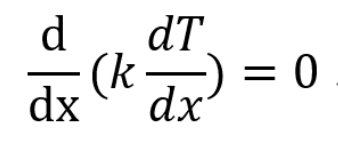
지난시간, 위식을 적분하여
Temperature distribution을 해석하였다.
결론적으로,
qx(괄호안)이 x와 independent
하였다.
However, 만약에
Area change
하는 상황에서
우리는 다르게 접근 해야만 한다.
Fourier's Law 로부터 접근해보자.
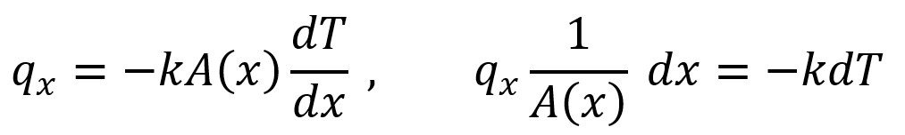
위식을 적분해주면 (qx는 일정하므로 밖으로)
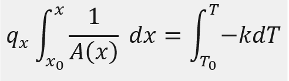
결국,
면적을 x에 따른 식으로 표현 할 수 있다면,
T(x)를 x로 표현 할 수 있다.
(우리의 목표 = Temperature 분포를 아는것)
지금까지 xdirection 1-D Steady process를 분석했지만,
이제 Cylindrical coordinate에서 분석해보자.
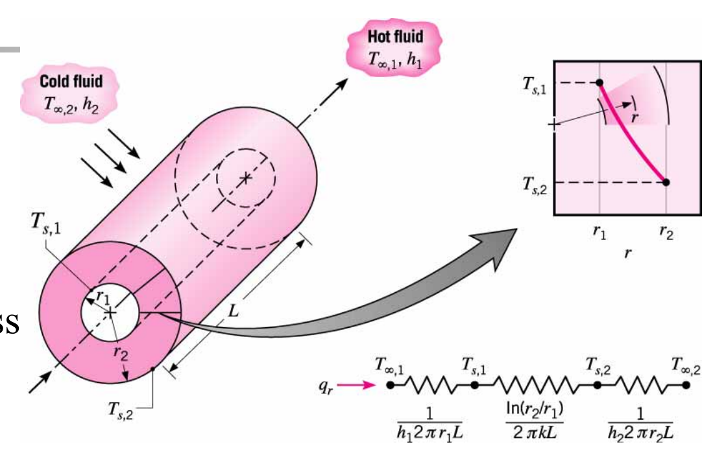
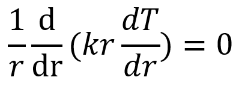
Temperature Eq을 통해서
r dT/dr 은 r과 independent
하다는 것을 알 수 있고,
Heat transfer rate는 Fourier's Law로 다음과 같다.
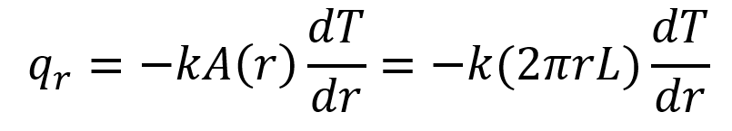
rdT/dr 은 r과 independent하므로
결국 qr 은 r과 무관하게 일정하다.
이제 T(r)을 r에 관한 함수로 표현해보자.
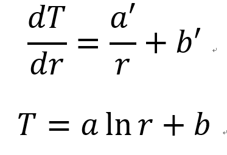
(a,a',b,b'은 모두 상수)
이제 boundary condition을 대입하여, a,b를 표현해보자.
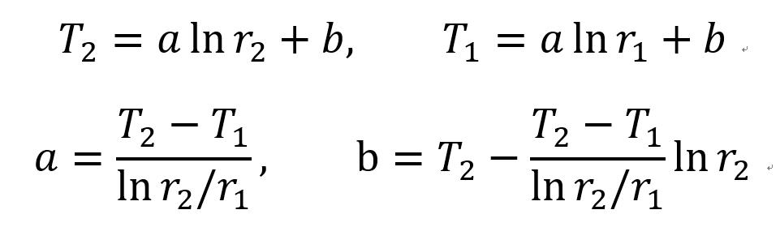
따라서, 최종적으로
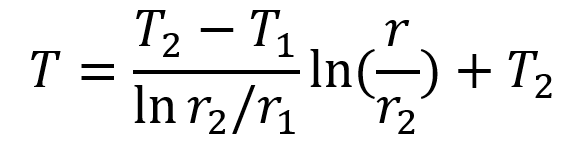
이제 Heat transfer rate qr을 구해보면
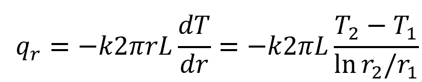
위식을 살펴보면 r이 없는 것을 알 수 있다(independent)
자, T, q를 구했으니 다음은 뭘구해야될까?
바로
Thermal Resistance
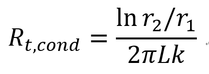
따라서, 아주 복잡하고 여려 곂이 있는 cylinder conduction도
다음과 같이 표현 할 수 있다.
[p127]
마지막으로 sphere 형태일때는??
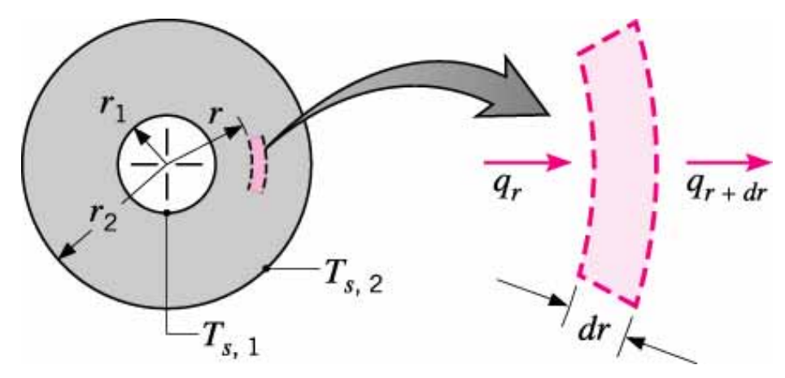
qr = qr+dr임을 알 수 있다.
Fourier's Law에 의해,
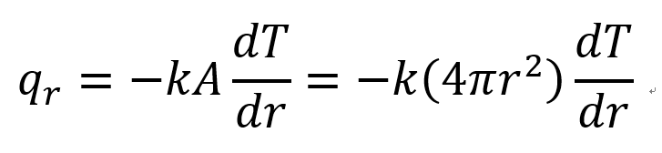
이제 이 식을 적분 해주면,
다음과 같이, qr, Thermal resistance derive 가능이다.
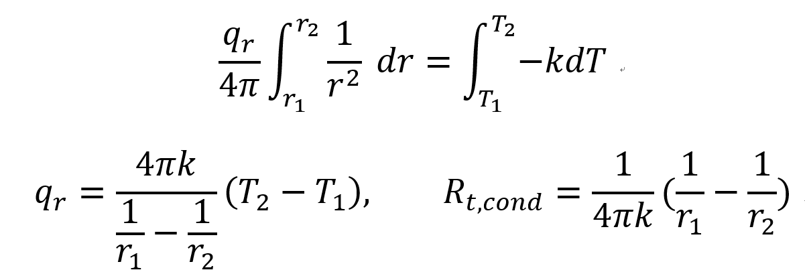
{% endraw %}